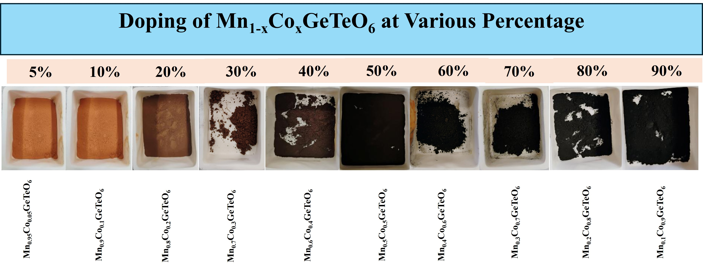
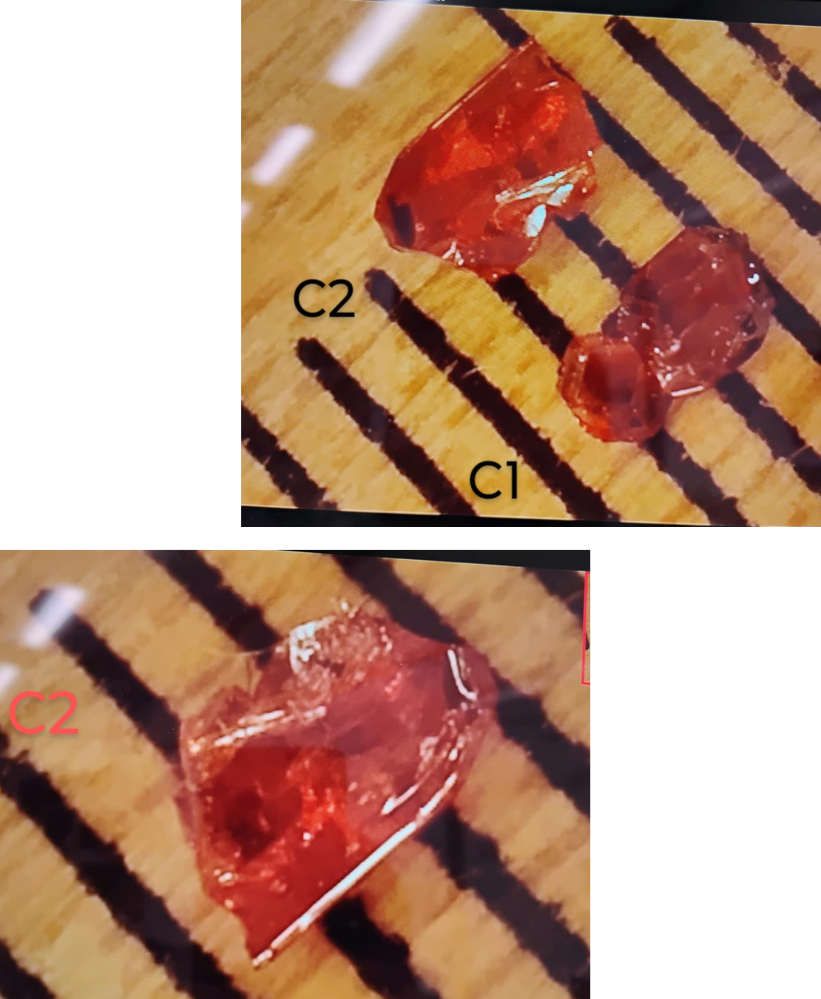
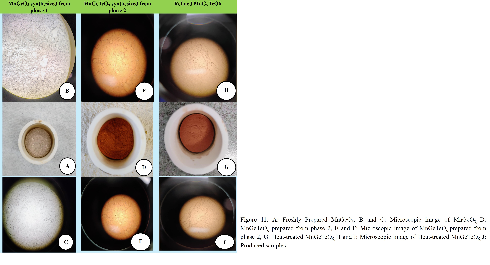

Magnetic Materials & Crystal Growth
My research includes magnetic-powder synthesis, compositional doping, single-crystal growth, structural refinement, and magnetic characterization.
Material systems include cobalt-substituted MnGeTeO₆ and Mn₃Al₂Ge₃O₁₂ single crystals, alongside national-laboratory experience in magnetic-domain imaging and quantum-oscillation measurements.
Material Systems
My work combines preparation and characterization to investigate how material composition and structure relate to magnetic behaviour. Powder synthesis, doping, and single-crystal growth provide complementary routes to these questions.
Co-Doped MnGeTeO₆
I worked on cobalt substitution in MnGeTeO₆, expressed through the composition Mn₁₋ₓCoₓGeTeO₆.
The substitution level x defines the nominal replacement of Mn by Co. The research combines material preparation with structural and magnetic characterization.
Comparing compositions provides a route to investigate changes in phase formation, crystallographic parameters, and magnetic response.

Prepared samples with nominal cobalt substitution of 5%, 10%, 20%, 30%, 40%, 50%, 60%, 70%, 80%, and 90% (x = 0.05–0.90). The figure records the sample series and its composition labels.
View Full-Size Image

Single-crystal specimens C1 and C2 from my crystal-growth work, with a closer view of C2 in the lower photograph.
View Full-Size ImageMn₃Al₂Ge₃O₁₂ Single Crystals
My experience includes growing Mn₃Al₂Ge₃O₁₂ single crystals and preparing samples for subsequent characterization.
Single-crystal specimens complement powder studies by providing well-defined samples for structural and physical-property investigations.
Sample identity, preparation history, and measurement geometry remain important when connecting crystal preparation with measured behaviour.
Synthesis, Doping & Crystal Growth
Magnetic-Powder Synthesis
Experience with magnetic-powder preparation and solid-state synthesis, connecting precursor composition and processing history with subsequent phase characterization.
Compositional Doping
Preparation of cobalt-substituted MnGeTeO₆ compositions, with nominal substitution recorded explicitly for comparison across samples.
Single-Crystal Growth
Growth of Mn₃Al₂Ge₃O₁₂ single crystals, alongside sample preparation and characterization for materials research.

A: Freshly prepared MnGeO₃; B and C: Microscopic images of MnGeO₃; D: MnGeTeO₆ prepared from phase 2; E and F: Microscopic images of MnGeTeO₆ prepared from phase 2; G: Heat-treated MnGeTeO₆; H and I: Microscopic images of heat-treated MnGeTeO₆.
View Full-Size ImageStructural & Magnetic Characterization
My research at Prairie View A&M University, including NSF-supported work supervised by Dr. Sunil Karna, involved synthesis and structural refinement of magnetic materials and crystals.
| Technique | Information Examined | Research Role |
|---|---|---|
| X-ray diffraction | Crystalline phases and diffraction profiles | Evaluate phase formation and structural differences between prepared samples |
| Rietveld refinement | Crystallographic parameters supported by the diffraction data | Compare structural models and composition-dependent structural changes |
| Raman spectroscopy | Vibrational features associated with bonding and symmetry | Complement diffraction-based interpretation |
| SQUID magnetometry | Magnetic response under defined temperature and field conditions | Investigate magnetic behaviour with explicit measurement protocols |
| Lorentz TEM | Magnetic-domain-related electron contrast | Examine spatial magnetic structures |
| dHvA measurements | Angle- and temperature-dependent quantum oscillations | Investigate electronic structure in single-crystal HfSn₂ |
National Laboratory Measurements
Argonne National Laboratory
Visiting Research Student
Magnetic-Domain Investigation Using LTEM
Performed advanced Lorentz transmission electron microscopy analysis to investigate magnetic domain structures.
LTEM provides spatial information that complements bulk magnetic measurements. Interpretation considers imaging conditions, specimen geometry, and non-magnetic contrast contributions.
Los Alamos National Laboratory
Visiting Research Student
Quantum Oscillations in HfSn₂
Performed angle- and temperature-dependent de Haas–van Alphen measurements on HfSn₂ crystals.
Angular dependence provides information relevant to Fermi-surface geometry, while temperature-dependent amplitudes support effective-mass analysis under the appropriate measurement and modelling conditions.
This work concerns quantum-oscillation measurements on HfSn₂, distinct from my oxide synthesis and Mn₃Al₂Ge₃O₁₂ crystal-growth activities.